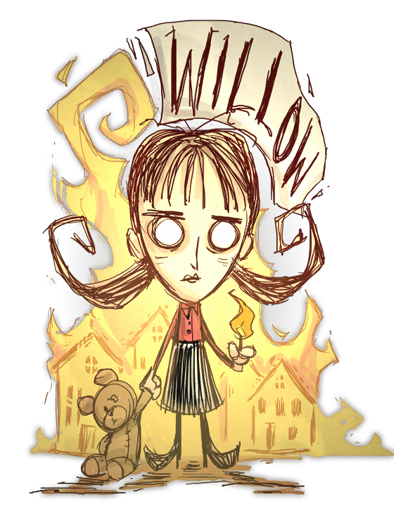

150 120 150
薇洛(Willow),外号火女，是一个纵火狂，你可以看到她身边有很多火 (不论好坏) 。在游戏中她不怕火烧，而且当她的理智太低时，她会在脚下点起一个小火苗。虽然这个小火苗可以回复她的理智，但是却有机会引起火灾，烧掉不少建筑，对于收集资源来说是一个问题。她在开始时就带有一个薇洛's Lighter (薇洛的打火机) ，可以用来点燃东西。薇洛的理智值上限比较低，但是当按近火时就会自然回升。
开局自带打火机，打火机的光比火把微弱，但是燃料无限（联机版本中有限）。它可以用来点燃物品，或是在夜晚中当作光源来避开暗影怪的攻击。免疫火焰伤害，而当一件物体著了火，或者接近有火的物品例如营火，薇洛理智值还会增加。火势愈大，靠得愈近则理智提升得愈快。玩家要站得很近火源才可以得到比较大的提升，反正薇洛对火免疫，所以不用怕站太近会烧伤自己。当薇洛的理智低于一定水平时 (大约是60点或以下) 她会在脚底点起一个小火苗然后说“嘻嘻("Tee Hee")，我生了一堆火("I made a fire!")”，“我控制不住了("I can't help myself")” 或者“阿喔！("Oops.")” 这是不能避免的，而且这个行为是在低理智值时随机出现。虽然只是个小火苗，但是绝对足够令森林，或是其他由玩家所建造的设备起火。当薇洛 的理智下降时务必注意。虽然小火苗是在薇洛的理智下降时出现，但和其他火源一样可以提升薇洛的理智值，当小火苗消失时,地下会留有灰烬。